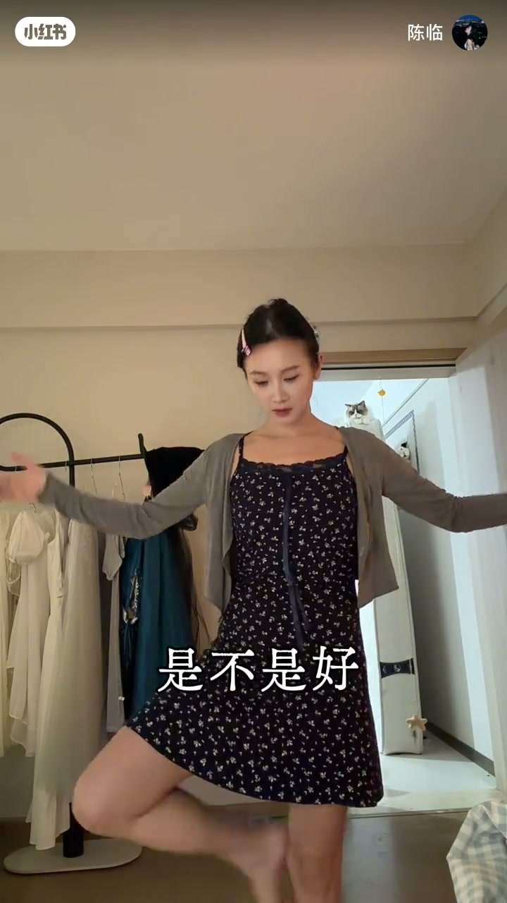

内容要点
声乐老师「陈临」用歌段演示转调：旋律不变却突然难唱、易破音，是因为「声调了」。她把升降调比作身高变化——平地做动作稳，穿高跟鞋同一动作就不稳，除非经常穿。Whisper 在约1分30秒至2分30秒大段空白，中后段以「这些都是转调作品」收束，细节结合画面重建。
知识结构
转调对我们意味着什么；招呼大家进来学。
末段旋律一样却难唱、易破音——因为升调了。
升降调=身高变了；不常穿高跟鞋就走不稳，不常唱升调段就控不住。
指出听的句子来自转调作品（ASR 后段稀疏）。
转调难的不是新旋律，而是同一旋律被抬高后的「身体不稳」——要靠反复练熟新高度。
00:00-00:51旋律不变，难在升调
开场设问「转调是什么意思」，随后唱出「你所愿的永远 / 走你所走的长路」一类段落，问听众：为什么最后一段明明旋律一样却突然难唱、控制不好就破音。
答案一针见血：它声调了——旋律骨架没变，音高基准变了。
00:51-03:59高跟鞋：高度变了就要練稳
把升调/降调比作人的身高变化：原本身高做「经济独立」动作很稳；穿上高跟鞋变高后再做同一动作就不稳——除非经常穿。唱歌同理：升调段没练两遍就抱怨跑掉，像几乎不穿高跟鞋却要求走稳。
后段口播被 Whisper 大量漏识，画面仍在讲转调作品与难唱句；实录以比喻主线为准，不臆造未出现的乐理公式。

完整转录（49段）
以下文本由 Whisper medium 模型自动转录，可能存在少量识别误差，已尽可能修正。
对我们来讲转调是什么意思
都给我进来学
你所愿的永远
走你所走的长路
是不是很多人唱到最后一段的时候
明明旋律是一样的
为什么这段就是很难唱
为什么这一段
喂 控制不好我就会破音呢
它声调了
你知道吗
旋律不变
但是它
声调了
这个比喻像什么呢
来 你等我一下
记不记得我给你们讲过的
声调降调等于是一个人的身高有变化
记得吗
不记得去看前面的课程
现在
现在我长这么高
我做个经济独立
我是不是很稳
是不是
好
我穿高跟鞋
我是不是变高了
好 我再来做经济独立
是不是
就没那么稳了
除非我经常穿这个高跟鞋
我经常穿我就能稳
我如果不经常穿我肯定不稳
这不常识吗
你别也没唱两遍
我唱歌不好听
我跑掉
怎么办
我这高跟鞋
我如果不经常穿我能走稳吗
能吗
能不能
我现在别说走路了
我现在
我穿高跟鞋
这都是
转调的作品
你听不该的这一句